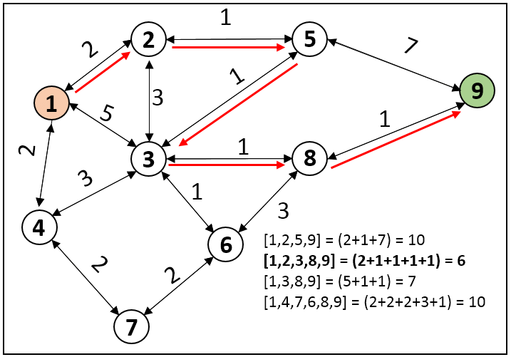

Dijkstra's Algorithm
Dijkstra's algorithm is a famous algorithm for finding the shortest paths
between nodes in a graph, which may represent, for example, road networks.
Learn more about the algorithm on
Wikipedia.

The algorithm is widely used in various applications, from network routing
protocols to finding the shortest travel time on a map. It works by
systematically exploring the graph and keeping track of the shortest
distance found so far to each node.
How It Works
-
Initialize distances to all nodes as infinity, except the source node,
which has a distance of zero.
- Maintain a set of unvisited nodes.
-
For the current node, consider all of its unvisited neighbors and
calculate their tentative distances.
-
If the newly calculated distance is smaller than the previously recorded
distance, update it.
-
Once all neighbors have been checked, mark the current node as visited
and move to the unvisited node with the smallest distance.